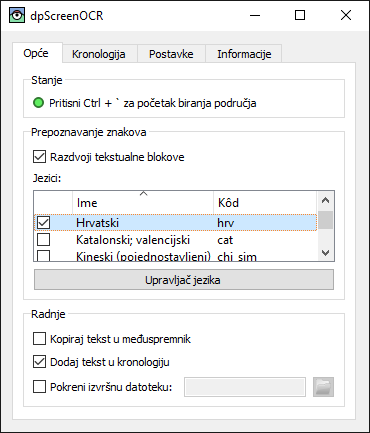

dpScreenOCR
dpScreenOCR is a program that can extract text from any part of the screen. It eliminates the need for manual retyping when working with scanned documents, screenshots, videos, user interface elements, and other situations where it is impossible to copy text in the usual way.

Features:
Pročitaj priručnik za upute o instaliranju, konfiguriranju i korištenju programa.
Preuzmi verziju 1.5.1 (promjene, licenca):

Doprinesi sudjelovanjem u prevođenju ili razvijanju programa.